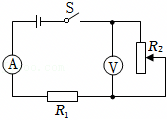
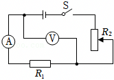
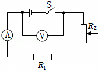
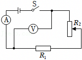
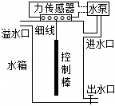
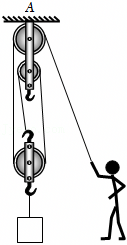
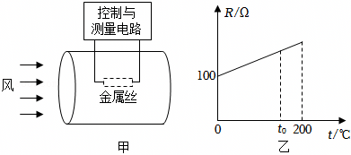

2025年北京市中考物理试卷 · 选择题 第11、12、13、14、15题
11．（2分）某同学用如图所示的其中一个电路做实验，电源电压恒定，R1为定值电阻，逐渐改变滑动变阻器R2连入电路中的阻值大小，记录电流表和电压表的示数如表所示。该实验所用的电路是（ ）
I/A | 0.08 | 0.09 | 0.10 | 0.14 | 0.16 | 0.19 |
U/V | 0.82 | 0.90 | 1.05 | 1.44 | 1.65 | 1.94 |
A．

B．

C．

D．

12．（2分）某小组设计了水箱自动控制进水装置，如图所示。水箱内的圆柱形金属控制棒用不可伸长的细线悬挂在力传感器下面，并始终浸在水中，通过它对力传感器拉力的大小触发开关，控制水泵自动进水。用水时，水箱内水位降低，当到达最低水位时，力传感器所受拉力等于F1，触发开关，水泵开始持续向水箱注水；当水位到达最高水位时，力传感器所受拉力等于F2，再次触发开关，水泵停止向水箱注水。若进水过程中同时用水，相同时间内进水量大于出水量。已知控制棒的质量为m，水的密度为ρ水。下列说法正确的是（ ）

A．控制棒受到的浮力最大时，排开水的体积为
B．控制棒受到的浮力的变化量最大为mg﹣F2
C．力传感器受到的拉力大小在F1与F2之间时，说明水箱正在进水
D．缩短悬挂控制棒的细线，可使水箱中的最高和最低水位均升高
（多选）13．（2分）如图所示，一只太阳能草坪节能灯，由太阳能电池板、蓄电池、“6V 1W”的节能灯等组成，太阳能电池板发电并将电能储存在蓄电池中，供节能灯晚间照明；该太阳能电池板接收太阳辐射的面积为0.025m2，其光电转化效率（即发电效率）为20%。若在太阳能电池板接收太阳辐射的有效时间内，1m2太阳能电池板接收太阳辐射的功率为640W。下列说法正确的是（ ）
A．太阳能是可再生能源
B．太阳能电池板给蓄电池充电过程中将化学能转化成电能
C．该灯的太阳能电池板发电功率为16W
D．节能灯正常发光10h消耗的电能为0.01kW•h
（多选）14．（2分）如图所示，重600N的工人通过滑轮组用竖直向下的拉力匀速提升货物，表中是他某次工作的相关数据。若三个滑轮重均相等，不计滑轮组的绳重和摩擦，下列说法正确的是（ ）
货物所受重力G/N | 货物被提升高度h/m | 绳端所受拉力F/N | 所用时间t/s |
540 | 3 | 200 | 25 |

A．工人做功的功率为72W
B．滑轮组对悬挂点A的拉力为920N
C．滑轮组的机械效率为90%
D．若货物离开水平地面之前，工人用100N的力竖直向下拉绳端，则地面对货物的支持力为200N
（多选）15．（2分）图甲所示的是恒温式热线风速仪的结构示意图，将一根细金属丝置于圆柱形通道内，设定其工作温度为t0。使用时接通电路，金属丝升温到t0，风流过通道时，会带走部分热量，风速仪通过改变流过金属丝的电流维持金属丝的温度不变，此时单位时间内金属丝产生的热量与风带走的热量相等，风速仪通过测量金属丝两端的电压、风进入通道时风的温度，从而实现对风速的测量。已知风速越大、金属丝和风的温度差越大，单位时间内风带走的热量越多；当风速一定时，单位时间内风带走的热量与金属丝和风的温度差成正比。金属丝电阻R随温度t变化的关系如图乙所示。假设空气密度始终不变，下列说法正确的是（ ）

A．金属丝升温到t0的过程中阻值不变
B．流入风速仪的风的温度不变时，所测风速增大，金属丝两端的电压增大
C．若风速仪测得的电压越大，流入风速仪的风的温度越高，则风速越大
D．若t0＝150℃，风速仪测得温度为0℃与30℃的风速相同，则金属丝两端的电压之比为2：